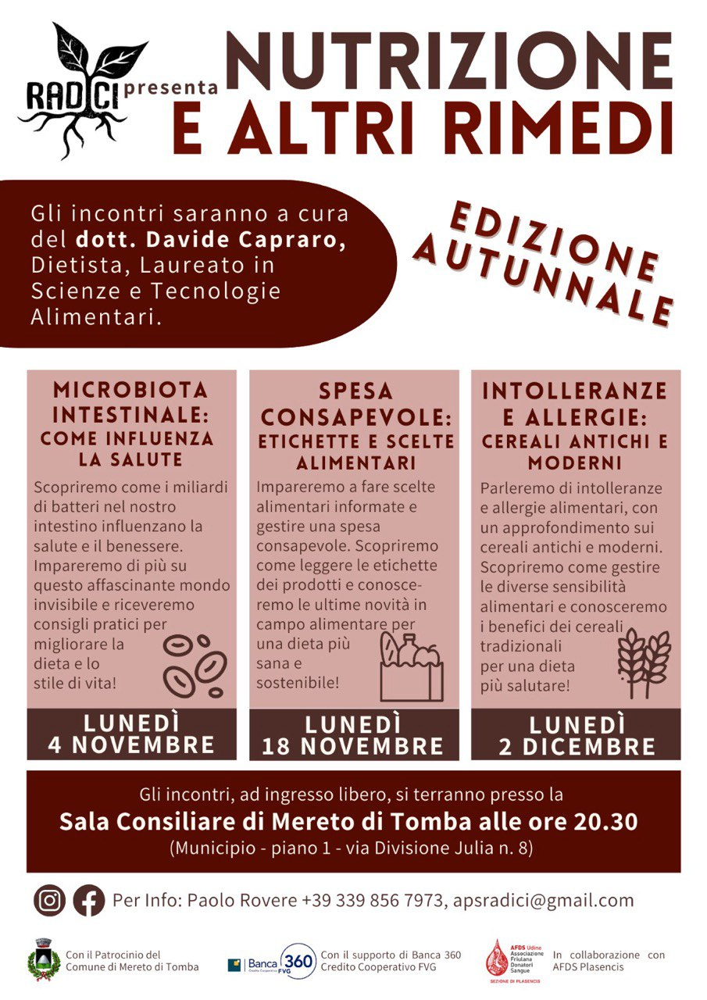
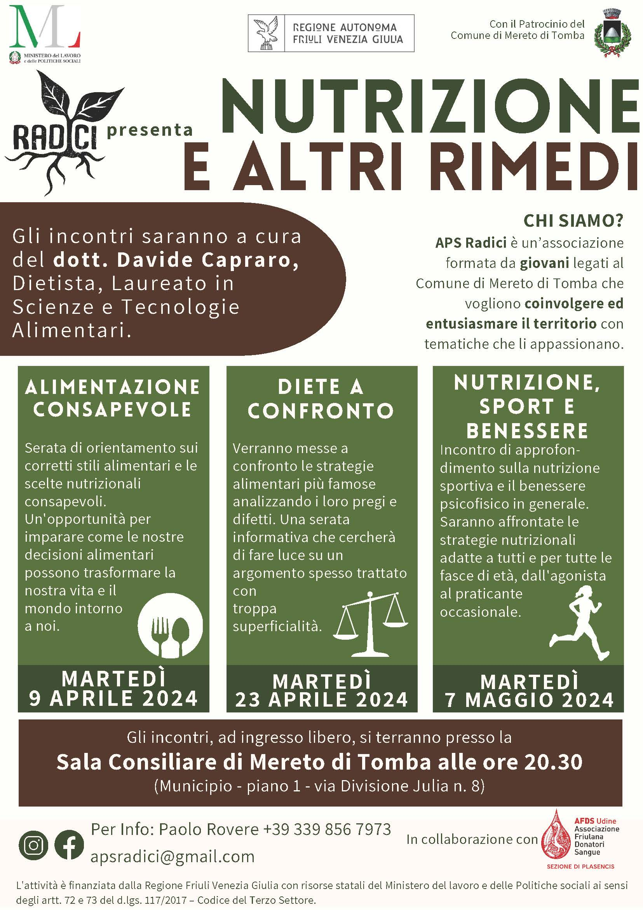
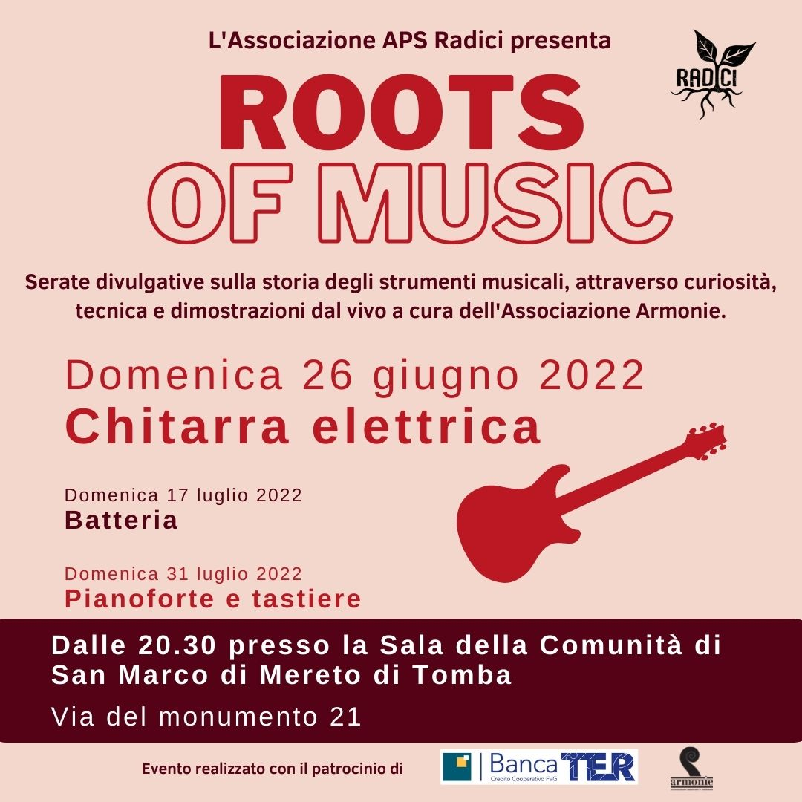
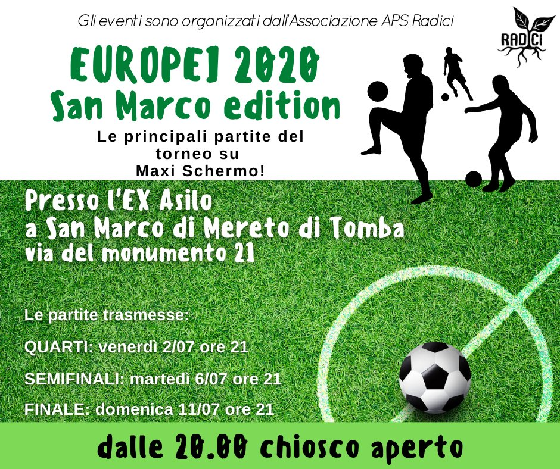
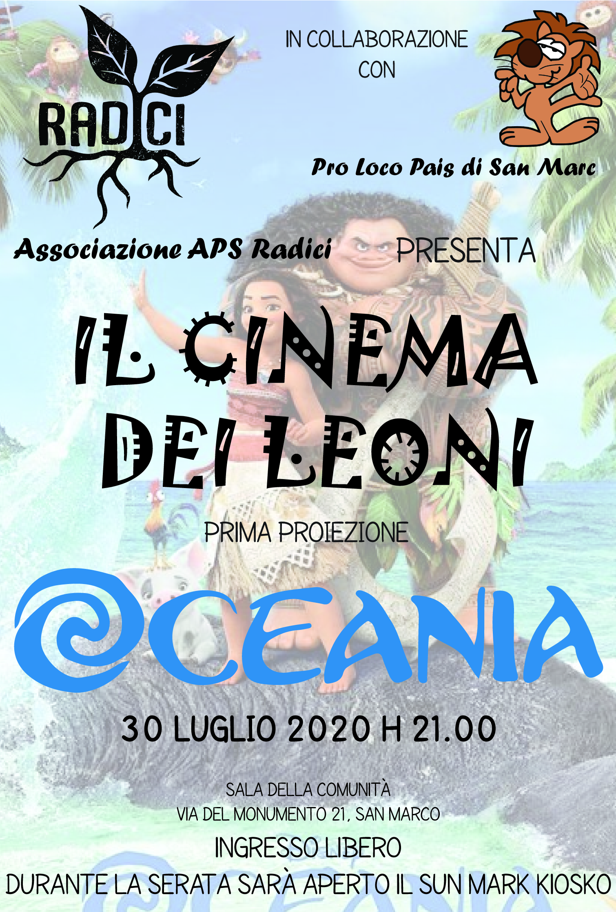
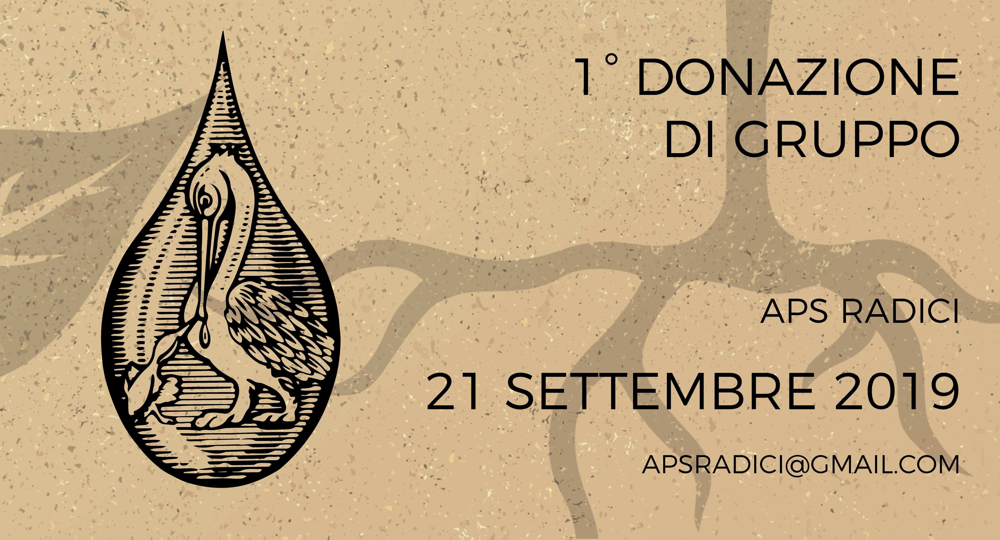
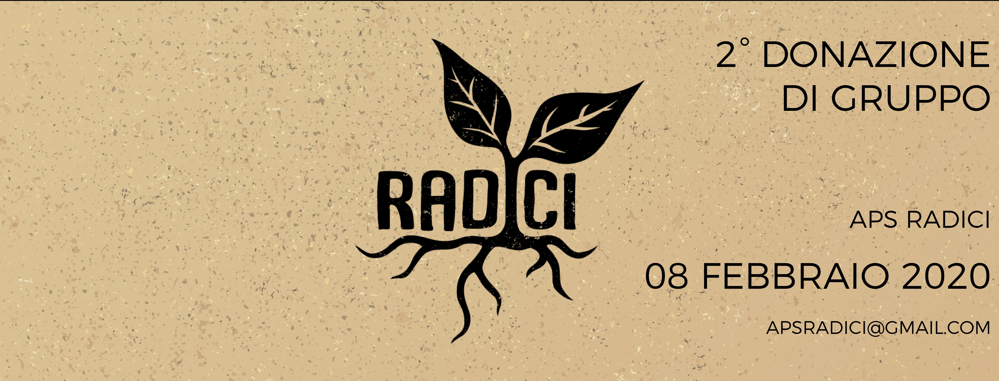

Aggregazione, cittadinanza attiva e promozione culturale nel cuore del Friuli, dal 2019.
Scopri chi siamoLa nostra missione
APS Radici persegue finalità civiche, solidaristiche e di utilità sociale mediante l'organizzazione e la gestione di attività culturali, artistiche e ricreative di interesse sociale, incluse attività editoriali, di promozione e diffusione della cultura e della pratica del volontariato.
Promuoviamo la libertà di espressione e di pensiero, valorizziamo tutte le opinioni e creare un ambiente di discussione aperto e libero. Al centro del nostro impegno c'è l'aggregazione e la valorizzazione dei giovani del territorio friulano.
L'associazione è apartitica, aconfessionale e non ha scopo di lucro. Tutti i proventi sono reinvestiti esclusivamente nelle finalità istituzionali.
Cosa facciamo
Organizziamo eventi di divulgazione culturale, scientifica e civica aperti a tutta la comunità locale.
Promuoviamo la cittadinanza attiva attraverso materiale informativo digitale e iniziative di aggregazione per i giovani.
Coordiniamo attività di interesse culturale, simposi e gruppi di discussione per ogni fascia d'età.
Organizziamo eventi per promuovere e valorizzare i giovani talenti del territorio friulano.
Collaboriamo con le altre realtà associative del territorio per perseguire obiettivi condivisi di utilità sociale.
Realizziamo attività di raccolta fondi nel rispetto dei principi di verità, trasparenza e correttezza.
Dati legali e registro
Cosa abbiamo fatto
Dal 2019 organizziamo eventi culturali, sociali e ricreativi per il territorio di San Marco e Mereto di Tomba.

Tre serate con il dott. Davide Capraro, Dietista: Microbiota intestinale, Spesa consapevole, Intolleranze e cereali antichi. Novembre–Dicembre, Sala Consiliare di Mereto di Tomba. Con il patrocinio di Banca 360 e in collaborazione con AFDS Plasencis.

Tre serate con il dott. Davide Capraro, Dietista: Alimentazione consapevole, Diete a confronto, Nutrizione, sport e benessere. Aprile–Maggio 2024, Sala Consiliare di Mereto di Tomba. Con il patrocinio della Regione FVG e del Comune di Mereto di Tomba.

Tre serate divulgative sulla storia degli strumenti musicali — chitarra elettrica, batteria, pianoforte — con dimostrazioni dal vivo a cura dell'Associazione Armonie. Con il patrocinio di Banca TER.

Le principali partite del torneo trasmesse su Maxi Schermo presso l'Ex Asilo di San Marco, con chiosco aperto e serata in compagnia.

Cinema all'aperto con ingresso libero presso la Sala della Comunità di San Marco. Prima proiezione: Oceania. In collaborazione con la Pro Loco Pais di San Marc.


Prima donazione collettiva il 21 settembre 2019, seconda l'8 febbraio 2020. Giornate di sensibilizzazione alla donazione del sangue in collaborazione con AFDS.
Pubblicazioni
Una serie di stampe per valorizzare il territorio del Friuli Venezia Giulia alla scoperta di curiosità e segreti nascosti, distribuita gratuitamente.
Una raccolta di libri che parlano di una terra piccola, con una cultura ampia, georeferenziati sulla mappa regionale.
📄 Scarica PDF →Cinque mete insolite nel Friuli: dal Sentiero del Dinosauro al Lago di Redona, dalle Grotte di Pradis ai sentieri della Grande Guerra.
📄 Scarica PDF →Trasparenza
In conformità al Codice del Terzo Settore (D.Lgs. 117/2017), rendiamo pubblici i documenti ufficiali dell'associazione.
Documenti costitutivi
Bilanci consuntivi
Contattaci
Per informazioni sulle attività, per aderire come socio o per collaborare con noi.